Scalars
The first rendering shape measured here: a layout, an included partial, a loop over scalars with a filter, and a nested loop inside it. A time here and a time further down are not the same measurement — compare engines WITHIN a page.
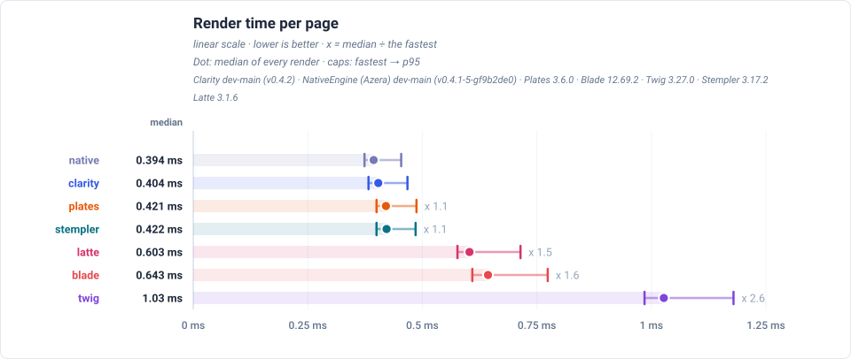
Dot: median render · caps: fastest observation and p95.
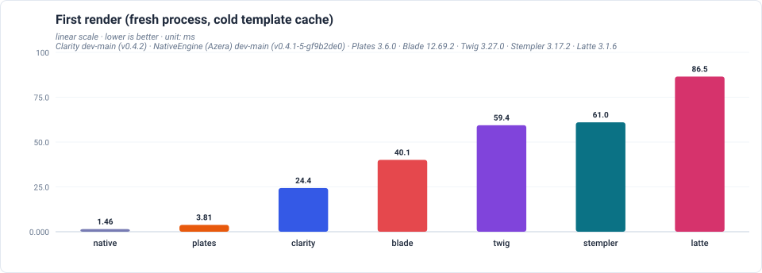
The one-off cost of the first request after a deploy: engine boot, template compile, cache write and one render. Measured once per engine, each in its own fresh process; OPcache is on but its CLI segment is per-process, so the engine source is compiled there too.
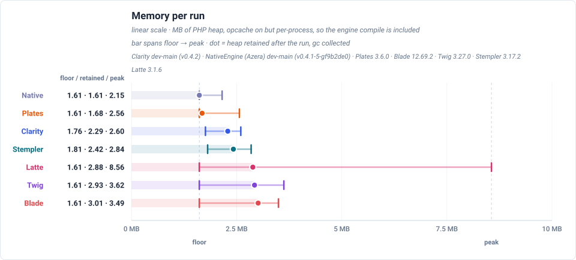
Reads the PHP heap. Left cap: what the engine costs to have loaded, nothing rendered. Dot: what a whole run still holds, after a gc pass — memory_get_usage(false) after a whole run of iterations_per_run renders in a fresh process, gc_collect_cycles() called first. Right cap: the run's high-water mark. Memory probe: a fresh process with opcache.enable_cli=1 but a per-process CLI segment, so engine source is compiled in that process.
Results
| Engine | First render (ms) | Mean (ms) | Median (ms) | Min (ms) | p95 (ms) | Retained (MB) | Peak (MB) |
|---|---|---|---|---|---|---|---|
| Native | 1.465 | 0.403 | 0.394 | 0.374 | 0.454 | 1.61 | 2.15 |
| Clarity | 24.361 | 0.414 | 0.404 | 0.383 | 0.468 | 2.29 | 2.60 |
| Plates | 3.809 | 0.431 | 0.421 | 0.400 | 0.487 | 1.68 | 2.56 |
| Stempler | 60.995 | 0.432 | 0.422 | 0.400 | 0.485 | 2.42 | 2.84 |
| Latte | 86.525 | 0.624 | 0.603 | 0.577 | 0.714 | 2.88 | 8.56 |
| Blade | 40.053 | 0.667 | 0.643 | 0.609 | 0.774 | 3.01 | 3.49 |
| Twig | 59.394 | 1.055 | 1.027 | 0.985 | 1.179 | 2.93 | 3.62 |
A cell here is the median of one engine's own renders in its own fresh process — not a shared high-water mark.
Mixed
Rendering the heavy page: 20 flat variables each read twice (as text and as a data-value attribute) plus 20 rows of six fields each, over 40 flat variable accesses per render and 1440 in total at 200 items, with every value HTML-special so the escape path does real work in both the body and an attribute context. A figure here and a figure above are different measurements — compare engines within a page, not across pages.
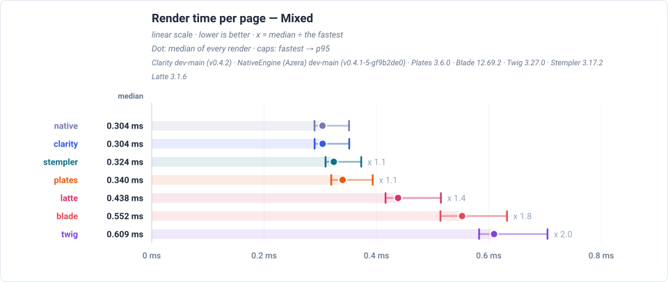
Dot: median render · caps: fastest observation and p95.
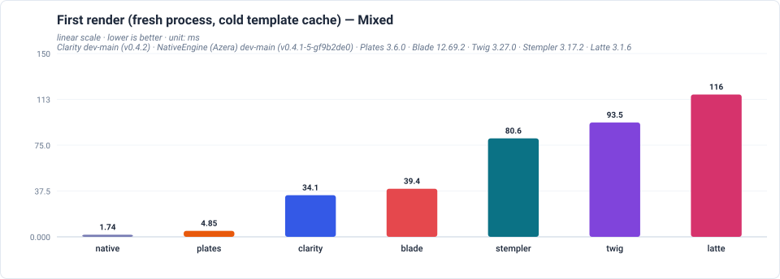
The one-off cost of the first request after a deploy: engine boot, template compile, cache write and one render. Measured once per engine, each in its own fresh process; OPcache is on but its CLI segment is per-process, so the engine source is compiled there too.
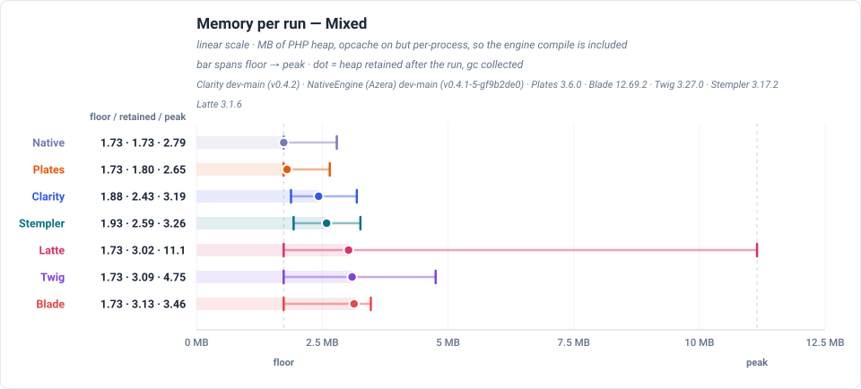
Reads the PHP heap. Left cap: what the engine costs to have loaded, nothing rendered. Dot: what a whole run still holds, after a gc pass — memory_get_usage(false) after a whole run of iterations_per_run renders in a fresh process, gc_collect_cycles() called first. Right cap: the run's high-water mark. Memory probe: a fresh process with opcache.enable_cli=1 but a per-process CLI segment, so engine source is compiled in that process.
Results
| Engine | First render (ms) | Mean (ms) | Median (ms) | Min (ms) | p95 (ms) | Retained (MB) | Peak (MB) |
|---|---|---|---|---|---|---|---|
| Native | 1.735 | 0.311 | 0.304 | 0.290 | 0.351 | 1.73 | 2.79 |
| Clarity | 34.071 | 0.312 | 0.304 | 0.290 | 0.352 | 2.43 | 3.19 |
| Stempler | 80.558 | 0.332 | 0.324 | 0.309 | 0.373 | 2.59 | 3.26 |
| Plates | 4.852 | 0.349 | 0.340 | 0.320 | 0.393 | 1.80 | 2.65 |
| Latte | 116.467 | 0.454 | 0.438 | 0.416 | 0.515 | 3.02 | 11.15 |
| Blade | 39.354 | 0.562 | 0.552 | 0.514 | 0.632 | 3.13 | 3.46 |
| Twig | 93.544 | 0.626 | 0.609 | 0.583 | 0.704 | 3.09 | 4.75 |
Objects
Rendering objects instead of scalars: two properties, a nested object, a nullable property behind a default, and an array inside an object. A figure here and a figure above are different measurements — compare engines within a page, not across pages.
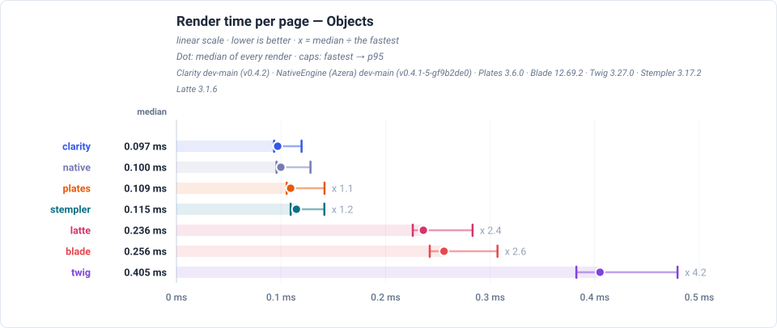
Dot: median render · caps: fastest observation and p95.
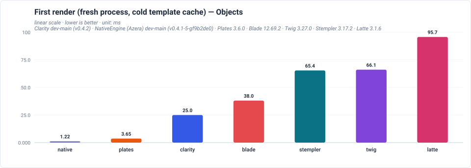
The one-off cost of the first request after a deploy: engine boot, template compile, cache write and one render. Measured once per engine, each in its own fresh process; OPcache is on but its CLI segment is per-process, so the engine source is compiled there too.
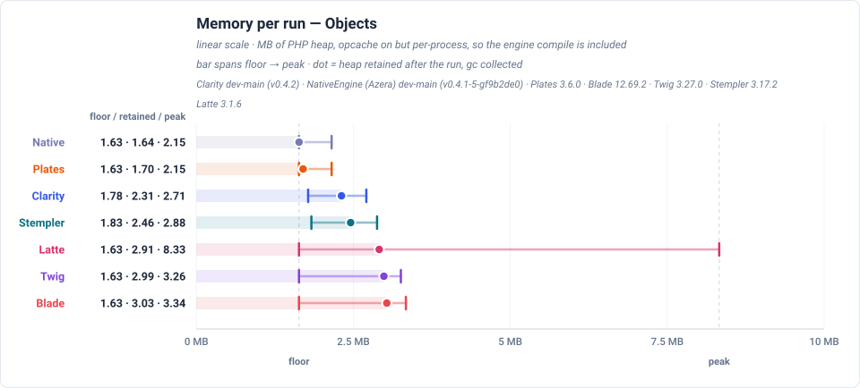
Reads the PHP heap. Left cap: what the engine costs to have loaded, nothing rendered. Dot: what a whole run still holds, after a gc pass — memory_get_usage(false) after a whole run of iterations_per_run renders in a fresh process, gc_collect_cycles() called first. Right cap: the run's high-water mark. Memory probe: a fresh process with opcache.enable_cli=1 but a per-process CLI segment, so engine source is compiled in that process.
Results
| Engine | First render (ms) | Mean (ms) | Median (ms) | Min (ms) | p95 (ms) | Retained (MB) | Peak (MB) |
|---|---|---|---|---|---|---|---|
| Clarity | 24.994 | 0.101 | 0.097 | 0.093 | 0.120 | 2.31 | 2.71 |
| Native | 1.217 | 0.106 | 0.100 | 0.096 | 0.128 | 1.64 | 2.15 |
| Plates | 3.647 | 0.116 | 0.109 | 0.105 | 0.142 | 1.70 | 2.15 |
| Stempler | 65.374 | 0.120 | 0.115 | 0.109 | 0.141 | 2.46 | 2.88 |
| Latte | 95.730 | 0.246 | 0.236 | 0.226 | 0.283 | 2.91 | 8.33 |
| Blade | 38.039 | 0.264 | 0.256 | 0.242 | 0.307 | 3.03 | 3.34 |
| Twig | 66.078 | 0.416 | 0.405 | 0.382 | 0.479 | 2.99 | 3.26 |
Objects as arrays
Rendering the same content in the same order with the same values held as nested arrays, so access shape is the only difference. A figure here and a figure above are different measurements — compare engines within a page, not across pages.
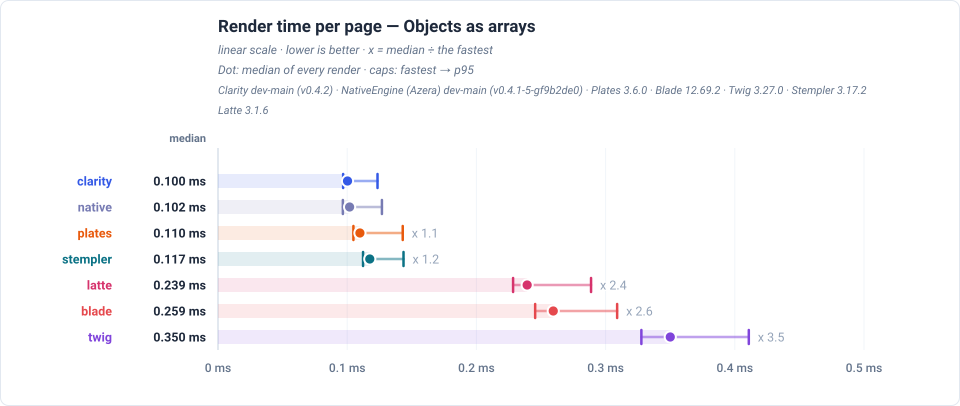
Dot: median render · caps: fastest observation and p95.
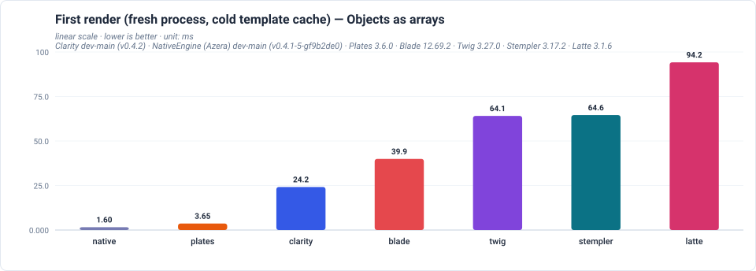
The one-off cost of the first request after a deploy: engine boot, template compile, cache write and one render. Measured once per engine, each in its own fresh process; OPcache is on but its CLI segment is per-process, so the engine source is compiled there too.
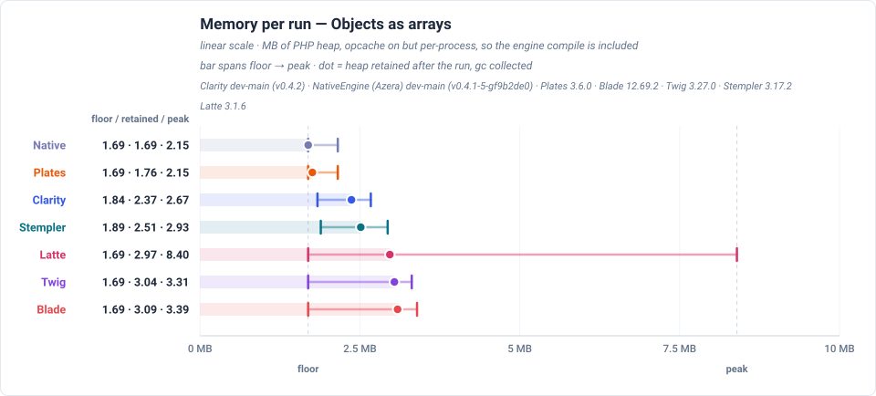
Reads the PHP heap. Left cap: what the engine costs to have loaded, nothing rendered. Dot: what a whole run still holds, after a gc pass — memory_get_usage(false) after a whole run of iterations_per_run renders in a fresh process, gc_collect_cycles() called first. Right cap: the run's high-water mark. Memory probe: a fresh process with opcache.enable_cli=1 but a per-process CLI segment, so engine source is compiled in that process.
Results
| Engine | First render (ms) | Mean (ms) | Median (ms) | Min (ms) | p95 (ms) | Retained (MB) | Peak (MB) |
|---|---|---|---|---|---|---|---|
| Clarity | 24.175 | 0.105 | 0.100 | 0.097 | 0.123 | 2.37 | 2.67 |
| Native | 1.597 | 0.107 | 0.102 | 0.097 | 0.127 | 1.69 | 2.15 |
| Plates | 3.650 | 0.116 | 0.110 | 0.105 | 0.143 | 1.76 | 2.15 |
| Stempler | 64.563 | 0.122 | 0.117 | 0.112 | 0.144 | 2.51 | 2.93 |
| Latte | 94.190 | 0.250 | 0.239 | 0.228 | 0.289 | 2.97 | 8.40 |
| Blade | 39.939 | 0.267 | 0.259 | 0.245 | 0.309 | 3.09 | 3.39 |
| Twig | 64.091 | 0.359 | 0.350 | 0.328 | 0.411 | 3.04 | 3.31 |